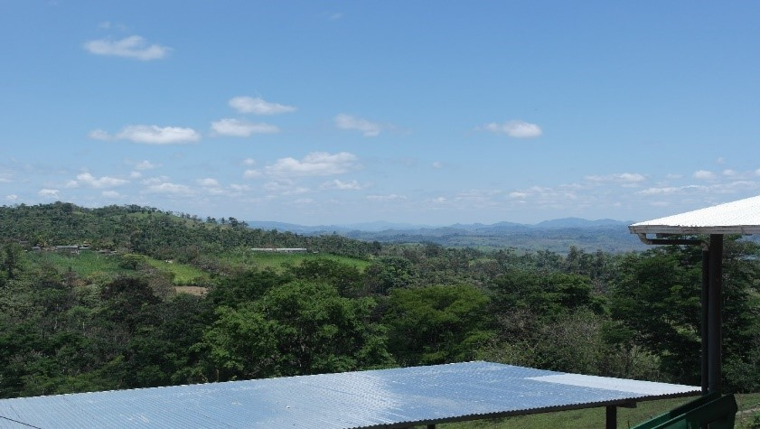

Cooperativa Bosawas RL
Información básica
| Año fundación: | 2006 |
| Ubicación: | Comunidad Divisiones de El Cua, municipio El Cua, Departamento Jinotega, Nicaragua |
| No. de asociados: | 42 asociados |
|

|
¿Quiénes somos?
Somos una cooperativa con asociados de diferente tamaño, pocos pero con alto volumen de café y café de calidad. Aprendimos a cultivar café con nuestros padres y ahora nos apoyamos en nuestros hijos que estudian. Desde el café vamos diversificando nuestros cultivos, incluyendo banano, plátano y malanga, y nos vamos proponiendo acopiarlo y entrar al comercio de esos productos.
Somos familias asociadas que no hemos recibido tierra vía reforma agraria. Nosotros hemos heredado tierra de nuestros padres y hemos comprado tierra. Y la mayoría de nosotros venimos de la misma comunidad, nos conocemos desde que éramos pequeños. Este origen y el estar en un mismo microterritorio nos facilita comunicarnos y coordinar nuestras acciones. Nuestra cooperativa es como la palanca de la comunidad y la comunidad es nuestra raíz.
Servicios
- Exportación de café. Ver cuadro evolución en qq oro.
| 2015/2016 |
2016/2017 |
2017/2018 |
| 4537 |
5,311.86 |
2,858.52 |
- Servicio de Crédito. La cartera actual es de US$380,000. De ellos fondo propioVer cartera de crédito actual. De ello, 19% es fondo propio.
- Servicios de beneficiado húmedo.
Órganos de la cooperativa
- Consejo de Administración: Victorino Adams Ríos (presidente), Isidoro Zelaya Herrera (Vicepresidente), Francisco Rivera Lumbí (Secretario), Ramón Efrain Cano (tesorero), Juan José Guillen (vocal)
- Junta de Vigilancia: Juan Francisco Adams Ríos, Ricardo Castro y Nelson Godoy
- Comité de Crédito: Abigail Adams, Carlos José Herrera y Martin Herrera
- Comité de Educación: Isidoro Zelaya Herrera, Noel Antonio Adams y Wilmer Guillen